Tarea de Investigación
Componentes de Red y Cableado Estructurado
1. ¿Qué son los componentes pasivos en la Red?
Los componentes pasivos en una red son aquellos que no requieren energía eléctrica para operar. Estos elementos están diseñados para permitir, guiar, organizar o distribuir las señales a lo largo de la red sin alterar la señal de ninguna manera.
2. Descripción técnica de cada componente pasivo
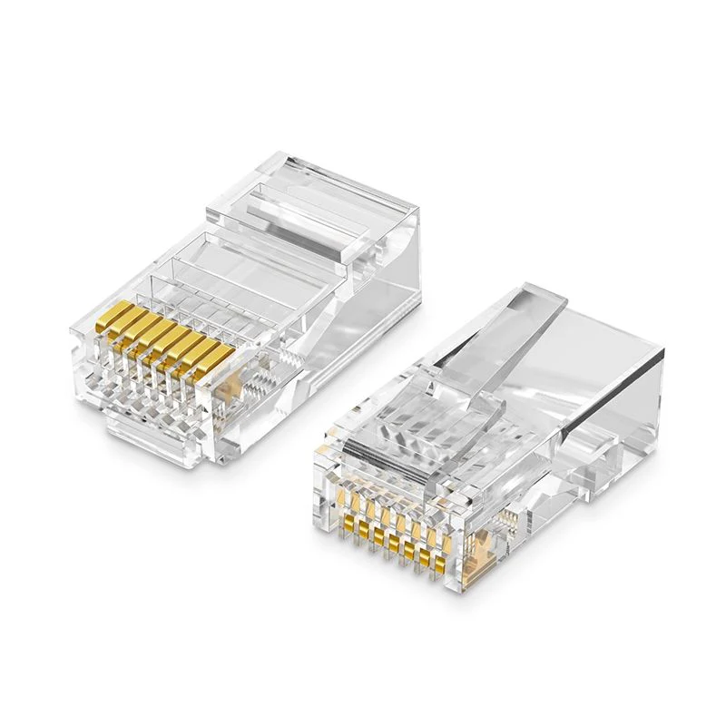
RJ45
El conector RJ45 es el estándar más común utilizado para la terminación de cables UTP en redes Ethernet. Tiene 8 pines que permiten la conexión de los hilos internos del cable, permitiendo la transmisión de datos. Este conector es esencial para establecer enlaces entre dispositivos como computadoras, switches, y routers.

Jacks o Keystone
Los Keystone Jacks son módulos insertables que permiten la conexión de cables de red a las placas de pared o paneles de conexión. Están diseñados para conectar cables UTP o STP y son esenciales en instalaciones estructuradas, permitiendo flexibilidad y modularidad en el cableado.
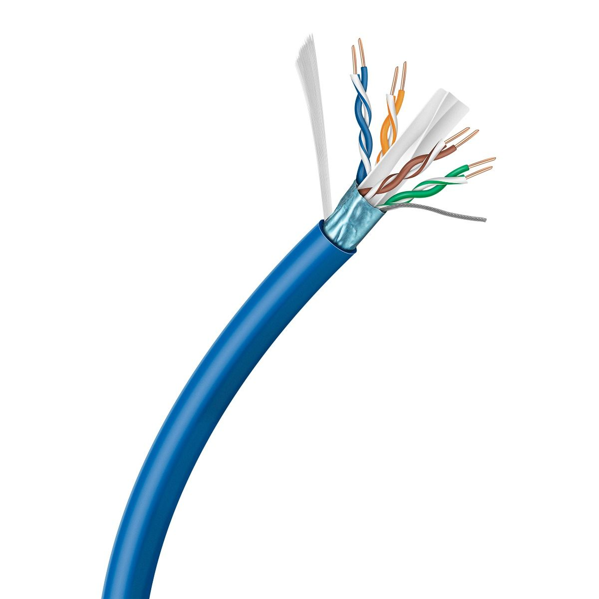
Cable UTP
El cable UTP (Unshielded Twisted Pair) es el tipo de cable más utilizado en redes de área local (LAN). Consiste en pares de hilos trenzados que reducen la interferencia electromagnética y la diafonía. Es ampliamente utilizado en redes Ethernet y viene en varias categorías, como Cat5e, Cat6, y Cat6a, que determinan la velocidad y el alcance de la transmisión.
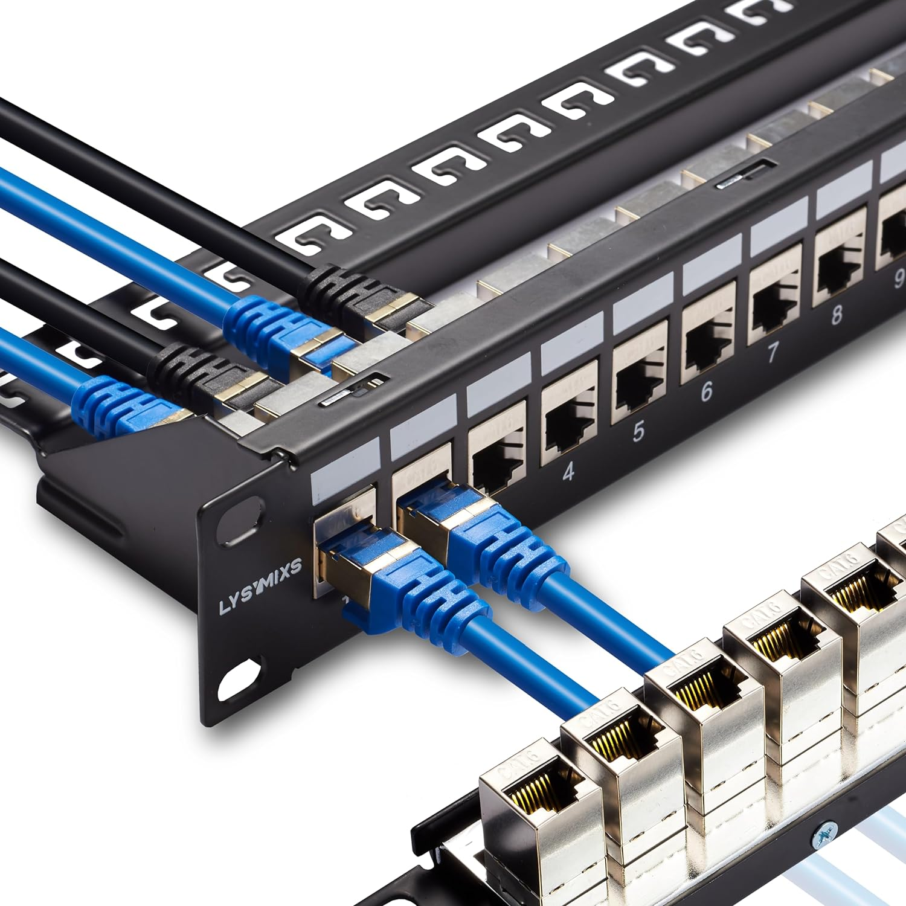
Patch Panel
El Patch Panel es un componente de hardware que alberga puertos para conectar cables de red desde los jacks o puntos de acceso hasta el switch o router. Este panel permite organizar y administrar los cables de manera eficiente en instalaciones de cableado estructurado, facilitando el mantenimiento y la reorganización de las conexiones.

Patch Cord
El Patch Cord es un cable corto, generalmente de par trenzado, que conecta un dispositivo de red a un Patch Panel o directamente a un equipo. Está terminado con conectores RJ45 en ambos extremos y se utiliza para interconectar dispositivos dentro de una red o para realizar pruebas de conectividad.
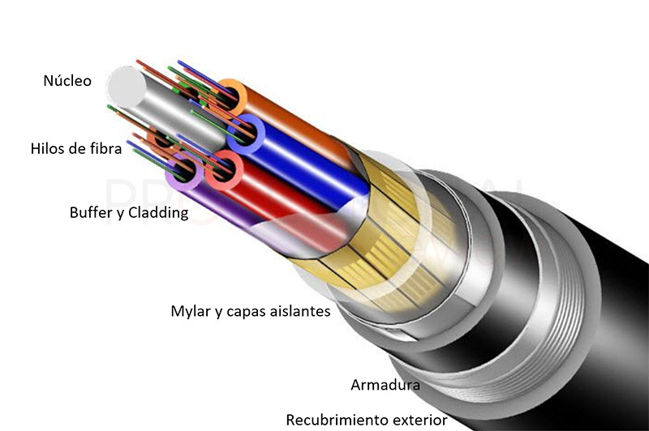
Fibra Óptica
La fibra óptica es un medio de transmisión que utiliza pulsos de luz para transmitir datos a través de largas distancias con una velocidad extremadamente alta. Este tipo de cable es inmune a las interferencias electromagnéticas y es ideal para redes donde se requiere una alta velocidad y ancho de banda.

Canaletas
Las canaletas son conductos utilizados para organizar y proteger cables de red dentro de una instalación. Permiten un tendido ordenado y seguro de los cables, evitando enredos y daños mecánicos, y facilitando el acceso para mantenimiento o actualizaciones.
3. ¿Qué son los componentes activos en la Red?
Los componentes activos son aquellos que requieren energía eléctrica para funcionar. Estos dispositivos no solo permiten el paso de señales, sino que también las amplifican, procesan y dirigen a su destino adecuado dentro de la red.
4. Descripción técnica de cada componente activo
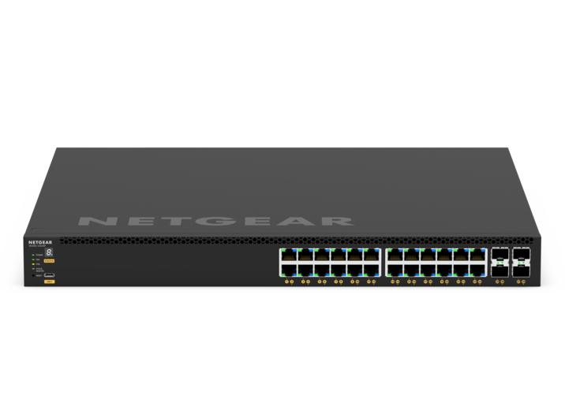
Switch
El Switch es un dispositivo de red que permite interconectar múltiples dispositivos dentro de una red local (LAN). Opera a nivel de la capa de enlace de datos (capa 2 del modelo OSI) y utiliza direcciones MAC para enviar datos solo al dispositivo destino correcto, lo que mejora la eficiencia y seguridad de la red.
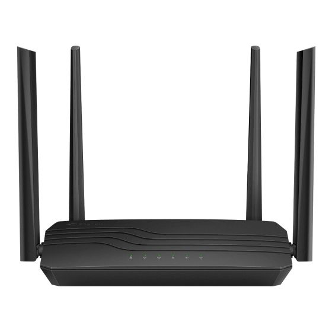
Router
El Router es un dispositivo que enruta paquetes de datos entre diferentes redes, operando a nivel de la capa de red (capa 3 del modelo OSI). Se utiliza para conectar redes locales a Internet y para gestionar el tráfico de datos entre subredes, utilizando direcciones IP.

Tarjeta de red
La tarjeta de red, o NIC (Network Interface Card), es un componente de hardware que permite a un dispositivo conectarse a una red. Puede ser interna, instalada en una ranura PCI, o externa, conectada por USB. Es esencial para la comunicación en redes Ethernet y otras tecnologías de red.

Interruptor inteligente Wifi
Un interruptor inteligente Wifi permite controlar dispositivos eléctricos a través de una red inalámbrica. Este dispositivo puede ser integrado en una red doméstica o comercial, permitiendo el control remoto de luces, ventiladores, y otros aparatos a través de aplicaciones móviles o asistentes virtuales.
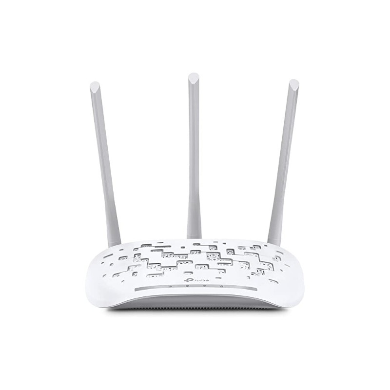
Access Point
El Access Point es un dispositivo que permite a dispositivos inalámbricos conectarse a una red cableada mediante Wi-Fi. Funciona como un hub central que extiende la cobertura de la red inalámbrica, permitiendo que múltiples dispositivos se conecten simultáneamente.
5. Herramientas utilizadas para realizar cableado estructurado

Ponchadora
La ponchadora es una herramienta utilizada para insertar y fijar los cables en los conectores RJ45 o los módulos Keystone. Esta herramienta asegura una conexión firme y duradera, esencial para mantener la integridad de la red.
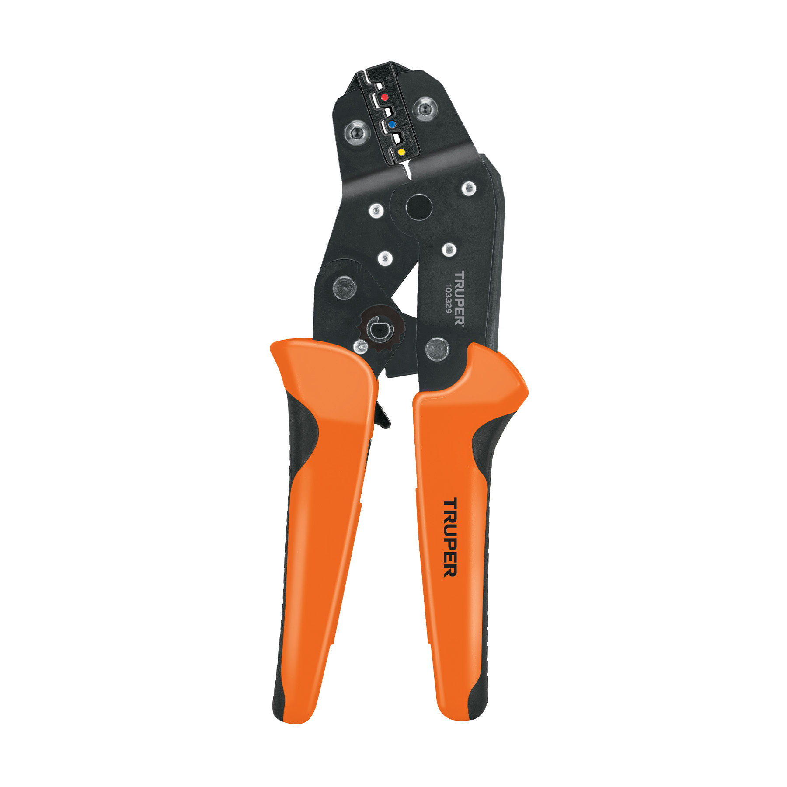
Crimpadora
La crimpadora es una herramienta que se utiliza para unir un conector, como un RJ45, al cable de red, asegurando que los hilos del cable estén bien conectados a los contactos del conector. Es esencial para crear cables personalizados para la red.

Desforradora
La desforradora es una herramienta utilizada para quitar la cubierta externa de los cables UTP o STP sin dañar los hilos internos. Esto es crucial para preparar los cables antes de conectarlos a los jacks o conectores.
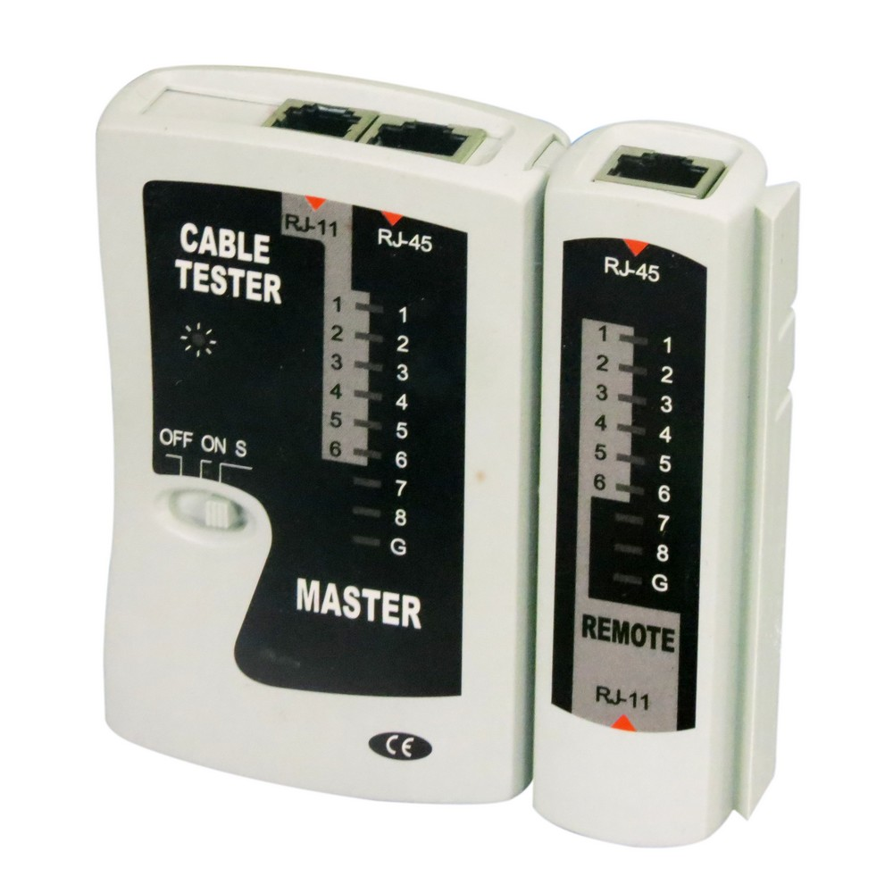
Tester/Probador de cables
El tester o probador de cables es una herramienta que verifica la continuidad y el correcto funcionamiento de los cables de red. Permite detectar fallos en la instalación y asegurar que todos los pares estén correctamente conectados.
6. ¿Qué es el cableado horizontal?
El cableado horizontal se refiere al sistema de cableado que conecta las estaciones de trabajo (computadoras, teléfonos, etc.) a la sala de telecomunicaciones dentro de un edificio. Este cableado incluye los cables que se extienden desde los paneles de conexión en las salas de telecomunicaciones hasta los jacks en las estaciones de trabajo. Es una parte fundamental del cableado estructurado y típicamente utiliza cables de par trenzado (UTP) o de fibra óptica.
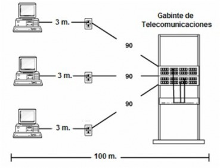
7. ¿Qué es el cableado vertical o backbone?
El cableado vertical, también conocido como backbone, conecta los diferentes pisos o áreas de un edificio, proporcionando la infraestructura principal que soporta la red. Este sistema de cableado se encarga de enlazar las salas de telecomunicaciones, armarios de telecomunicaciones y otros elementos críticos de la red, utilizando cables de alta capacidad como fibra óptica o cables de cobre de mayor grosor.
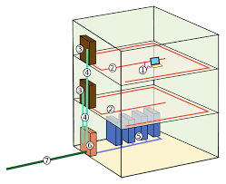
8. Tipos de cables para el sistema de cableado horizontal
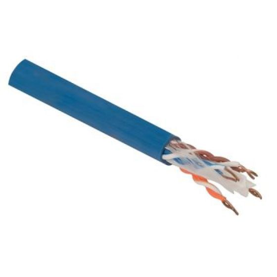
Cable Cat5e
El cable Cat5e es una mejora del estándar Cat5, soportando velocidades de hasta 1 Gbps y frecuencias de hasta 100 MHz. Es comúnmente utilizado en instalaciones de cableado horizontal para redes Ethernet en oficinas y hogares.
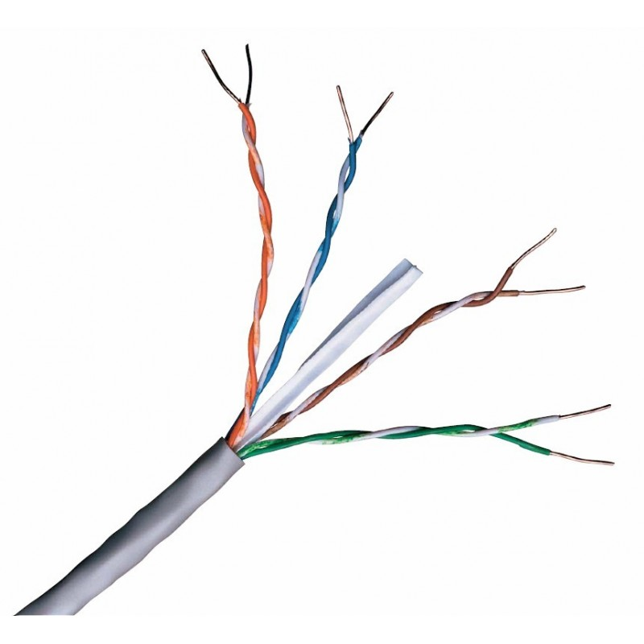
Cable Cat6
El cable Cat6 es un estándar de cableado que soporta velocidades de hasta 10 Gbps a frecuencias de hasta 250 MHz, aunque su rango efectivo para 10 Gbps es limitado a 55 metros. Es ideal para entornos donde se requiere un mayor ancho de banda y una mejor protección contra la diafonía.
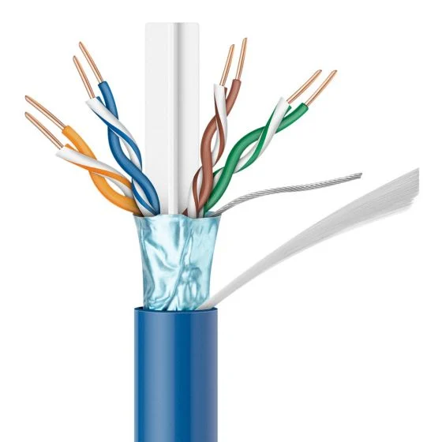
Cable Cat6a
El cable Cat6a es una versión mejorada del Cat6, capaz de soportar velocidades de 10 Gbps a frecuencias de hasta 500 MHz y a distancias de hasta 100 metros. Ofrece una mejor protección contra la diafonía y es adecuado para aplicaciones de alta velocidad en redes de gran tamaño.
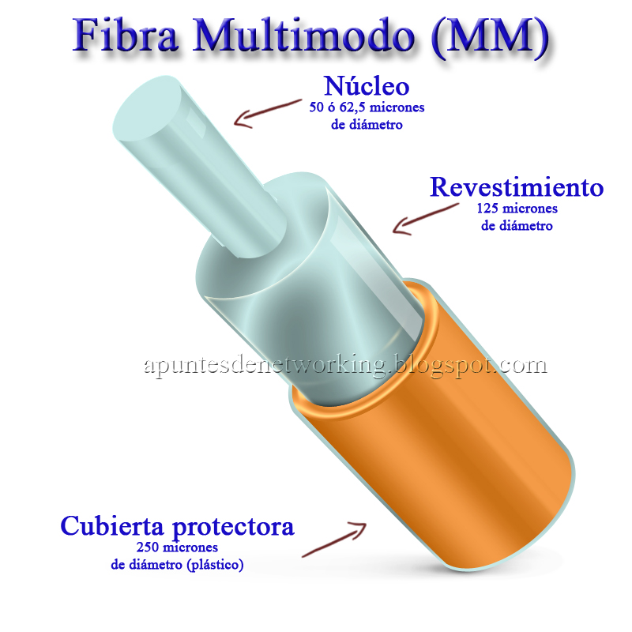
Fibra óptica multimodo
La fibra óptica multimodo se utiliza en redes locales (LAN) y data centers, soportando la transmisión de datos a alta velocidad en distancias cortas (hasta 550 metros). Es ideal para conectar switches, servidores y otros dispositivos en un entorno donde se requiere una alta velocidad de transmisión.
Fibra óptica monomodo
La fibra óptica monomodo se utiliza para transmisiones a larga distancia, como entre edificios o en redes de telecomunicaciones. Su núcleo más estrecho permite que la luz viaje en un solo modo, reduciendo la atenuación y permitiendo transmisiones a distancias mucho mayores que la fibra multimodo.
9. Normativa para hacer cables de red (clase A y B)
La normativa T568A y T568B son estándares de cableado utilizados para conectar cables UTP a conectores RJ45. Ambos esquemas definen el orden de los colores de los hilos dentro del cable, pero la diferencia radica en el orden de los pares verde y naranja. La elección entre T568A o T568B suele depender de las normas locales o las preferencias del instalador.
- T568A: Utilizado comúnmente en aplicaciones gubernamentales y proyectos internacionales, este estándar asigna el par verde en los pines 1 y 2, y el par naranja en los pines 3 y 6.
- T568B: Es el más utilizado en Estados Unidos y en instalaciones de red comerciales. Asigna el par naranja en los pines 1 y 2, y el par verde en los pines 3 y 6.
10. ¿Para qué se utiliza un cable directo en la red?
El cable directo se utiliza para conectar diferentes tipos de dispositivos entre sí dentro de una red, como una computadora a un switch o un router a un módem. Los cables directos tienen el mismo esquema de cableado en ambos extremos, generalmente T568A o T568B.
11. ¿Para qué se utiliza un cable cruzado en la red?
El cable cruzado se utiliza para conectar dispositivos similares directamente entre sí, como conectar dos computadoras directamente o dos switches. Este tipo de cable invierte el orden de los cables en uno de los extremos, utilizando T568A en un extremo y T568B en el otro.
Diagrama Laboratorio 6
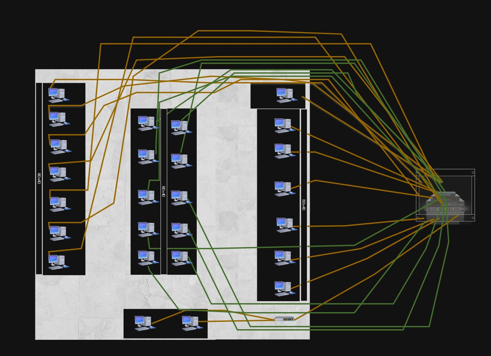
Presupuesto de Computadoras
| # |
Marca/modelo de las computadoras |
Cantidad |
Costo por unidad (USD) |
TOTAL (USD) |
| 1 |
Dell OptiPlex 3000 |
4 |
650 |
2,600 |
| 2 |
HP ProDesk 400 G7 |
4 |
620 |
2,480 |
| 3 |
Lenovo ThinkPad E15 |
2 |
750 |
1,500 |
| 4 |
HP Pavilion 15 |
2 |
720 |
1,440 |
| TOTAL |
8,020 |
Otros Componentes de la Red
| # |
Nombre del componente |
Cantidad |
Precio por unidad (USD) |
TOTAL (USD) |
| 1 |
Router Wi-Fi TP-Link Archer C6 |
2 |
45 |
90 |
| 2 |
Switch Gigabit Ethernet Steren SWI-108 |
2 |
19 |
38 |
| 3 |
Cable Ethernet UTP CAT 6, 2.1m |
10 |
3.49 |
34.9 |
| 4 |
Adaptador USB a Ethernet |
4 |
17 |
68 |
| 5 |
Repetidor Wi-Fi Steren, 2.4 GHz |
2 |
33.49 |
66.98 |
| TOTAL |
297.88 |
Canaletas y Cableado
| # |
Nombre del componente |
Cantidad |
Precio por cada Yarda o metro (USD) |
TOTAL (USD) |
| 1 |
Canaletas PVC |
50 metros |
2 |
100 |
| 2 |
Cableado eléctrico |
100 metros |
1.5 |
150 |
| 3 |
Cableado de red UTP CAT 6 |
200 metros |
3 |
600 |
| TOTAL |
850 |
Costo Total de Materiales y Computadoras
USD 9,167.88